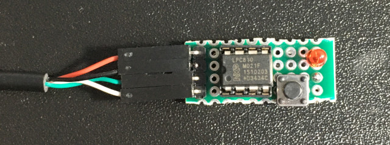
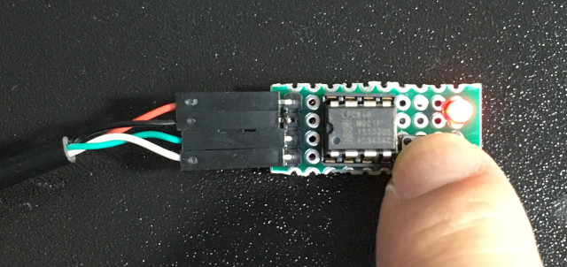

https://www-users.cs.york.ac.uk/~pcc/Circuits/LPC800/data/lpc810.html
https://github.com/microbuilder/LPC810_CodeBase/blob/master/doc/LPC81x%20User%20Manual.pdf
預設PIO0_2是SWDIO

DIR

SET

CLR

main.s
參考資訊：
https://www-users.cs.york.ac.uk/~pcc/Circuits/LPC800/data/lpc810.html
https://github.com/microbuilder/LPC810_CodeBase/blob/master/doc/LPC81x%20User%20Manual.pdf
預設PIO0_2是SWDIO
DIR
SET
CLR
main.s
.cpu cortex-m0
.thumb
.equ PINENABLE0, 0x4000c1c0
.equ GPIO_DIR0, 0xa0002000
.equ GPIO_PIN0, 0xa0002100
.equ GPIO_SET0, 0xa0002200
.equ GPIO_CLR0, 0xa0002280
.equ BIT1, 1
.equ BIT2, 2
.thumb_func
.global _start
_start:
.word 0x10000400 @ stacktop
.word reset @ reset
.word hang @ nmi
.word hang @ hardfault
.word hang @ reserved
.word hang @ reserved
.word hang @ reserved
.word hang @ reserved
.word hang @ reserved
.word hang @ reserved
.word hang @ reserved
.word hang @ svcall
.word hang @ reserved
.word hang @ reserved
.word hang @ pendsv
.word hang @ systick
.thumb_func
reset:
ldr r0, =PINENABLE0
ldr r1, =0xffffffff
str r1, [r0]
ldr r0, =GPIO_DIR0
ldr r1, =(1 << BIT2)
str r1, [r0]
loop:
ldr r0, =GPIO_PIN0
ldr r1, [r0]
lsl r1, r1, #1
str r1, [r0]
b loop
hang:
b .
.end
完成

